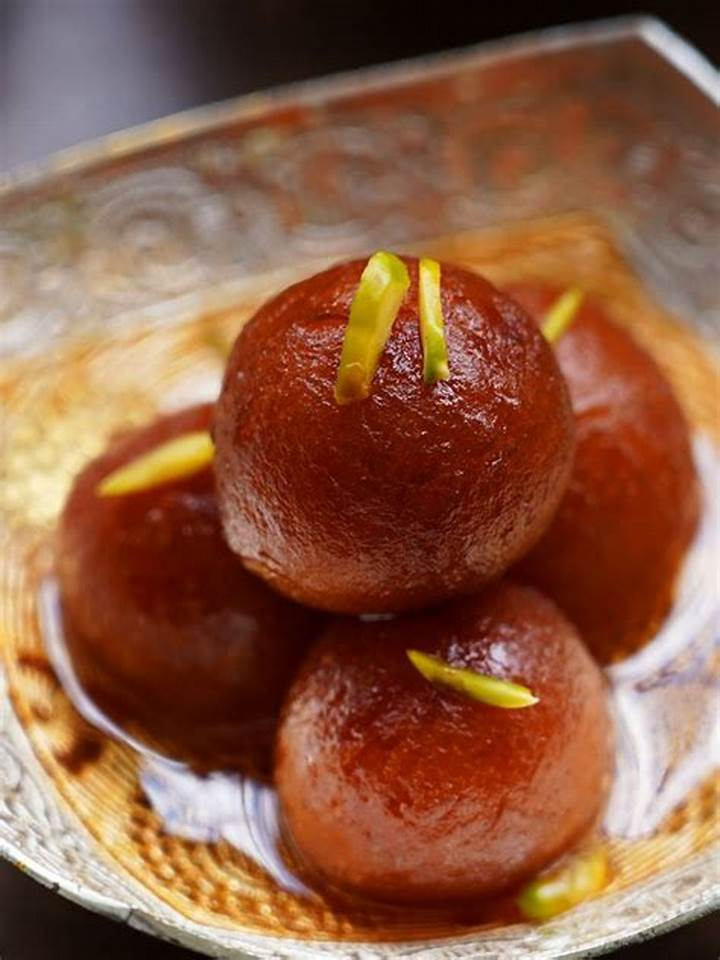
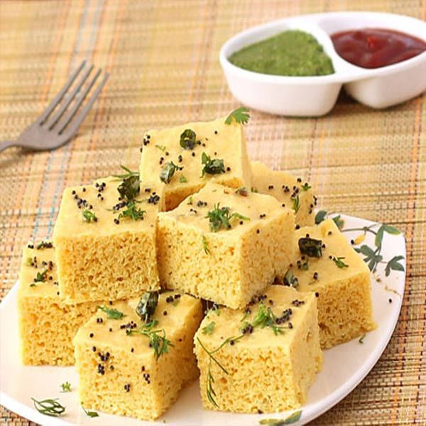

Gulab Jamun
Ingredients
- Milk Powder
- All-Purpose Flour (maida)
- Ghee (or oil)
- Ghee (or oil for greasing)
- Milk (use more as needed)
- Curd (yogurt or 3/4 tbsp lemon juice)
- Baking Soda (or 1/8 th tsp)
- Ghee (or oil for deep frying)
Recipe
- Prepare the sugar syrup
- Make the dough for Gulab Jamun
- Shape the dough in small balls
- Soak the fried balls in Gulab Jamun
- Garnish with dry fruits

Dhokla
Ingredients
- Besan (gram flour)
- Fine Semolina (fine suji/rava)
- Turmeric
- Sugar
- Salt
- Lemon Juice (or lime juice or 1/3 teaspoon natural citric acid)
- Oil
- Ginger Paste
Recipe
- Mix all the ingredients (except Eno powder) to form a smooth batter.
- Allow the batter to ferment for 1-2 hours.
- Grease a tray and pour the batter into it.
- Sprinkle some red chili powder on top.
- Steam until the dhokla is soft and fluffy.
- Cut into squares and serve with green chutney or tamarind chutney.
